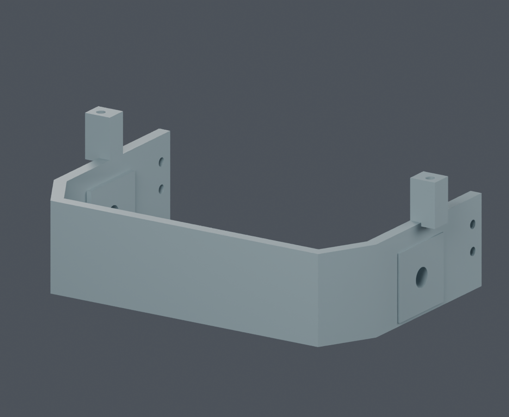

← 当前总装头托后侧 · 连续大折角
恢复旧版M1.24的折角轮廓：后横板与左右侧板分别通过一段长约16.1 mm的斜壁连接。内外轮廓一起转折，斜壁及直壁保持4.5 mm法向厚度，一体打印。轴孔、头壳安装孔和屏幕连接孔原位保留。
当前Blender · 装配动画版本说明
头托整体
 修改前 · V1.2-M1.27 · 小倒角
修改前 · V1.2-M1.27 · 小倒角 当前 · V1.2-M1.34 · 大折角
当前 · V1.2-M1.34 · 大折角外角局部
 修改前 · V1.2-M1.27 · 小倒角
修改前 · V1.2-M1.27 · 小倒角 当前 · V1.2-M1.34 · 大折角
当前 · V1.2-M1.34 · 大折角同一套头部装配
 修改前 · V1.2-M1.27 · 小倒角
修改前 · V1.2-M1.27 · 小倒角 当前 · V1.2-M1.34 · 大折角
当前 · V1.2-M1.34 · 大折角旧版轮廓参考 · M1.24

本次恢复此折角轮廓；当前两侧仍采用简化后的连续平壁。检查范围
本轮保持M1.28大折角头托几何。两侧斜壁共30条实体射线，最小法向壁厚约4.5 mm。小舵机、耳座及相关紧固件的变化由head_servo_validation.json单独核对。
专项检查PASS；完整模型81 PASS / 2 FAIL。头部联合130姿态为有限采样。打印强度、真实公差与未齐全器件的装配仍待验证，不能据此认定实机已合格。
局部检查数据 · 全局检查 · 实际执行命令 · 渲染来源